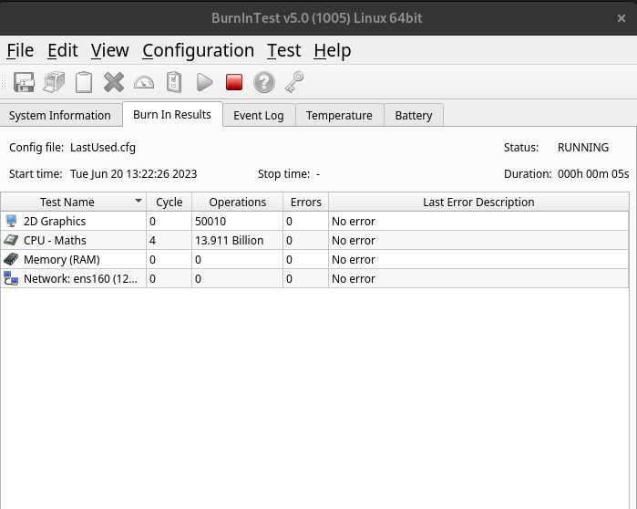
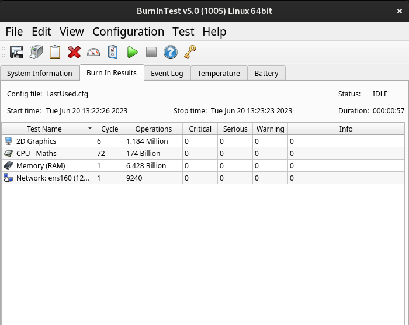

Interpreting the results |
Top Previous Next |
|

Status display In the main window there is a display that shows a summary of all the results of all the tests that are currently running.
Test Name This column shows a picture depicting the test type and the name of the test. Only those tests actually running are displayed. Cycle The number of test cycles that have been executed for a particular test. The meaning of a ‘test cycle’ varies from test to test. For example, for the Hard disk test it is the number of file write / verify cycles that have occurred. See the test description (chapter 3) for more details about the significance of this field.
Ops (Operations) The number of test operations that have been executed for a particular test. The meaning of a ‘Operation’ varies from test to test. For example, for the Hard disk test it is the number of bytes that have been written or verified. See the test description (chapter 3) for more details about the significance of this field. Note: The values are expressed in Units, Millions, Billions, Trillions and Quadrillions.
Default Error View Errors The number of errors that have been encountered while the test has been executing. This value should normally stay at zero. A value of greater than zero indicates there has been an error in the hardware or the software controlling the hardware. In some cases it is possible for the computer to self-detect an error. (such as the math’s and disk tests). In other cases the user must check themselves that no error has occurred (eg. Is there sound coming from the speakers? Are printouts complete, clear and legible? ).
Last error description This is the description of the last error that occurred. This will give some indication as to the cause of the error. See common error messages for a description of the errors that may be encountered.
Error by Category View Errors are tabulated based on their severity as defined in the file BITErrorClassification.txt. The number of errors for each test, for each level of severity: Critical, Serious, Warning and Informational will be displayed:  Display errors by category
See Detailed Error log history for an explanation of the logged output.
See Test Window Display for examples of each test window.
|